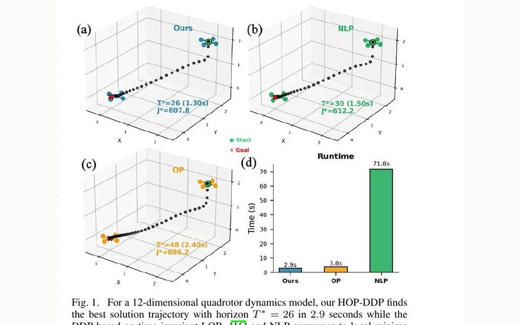
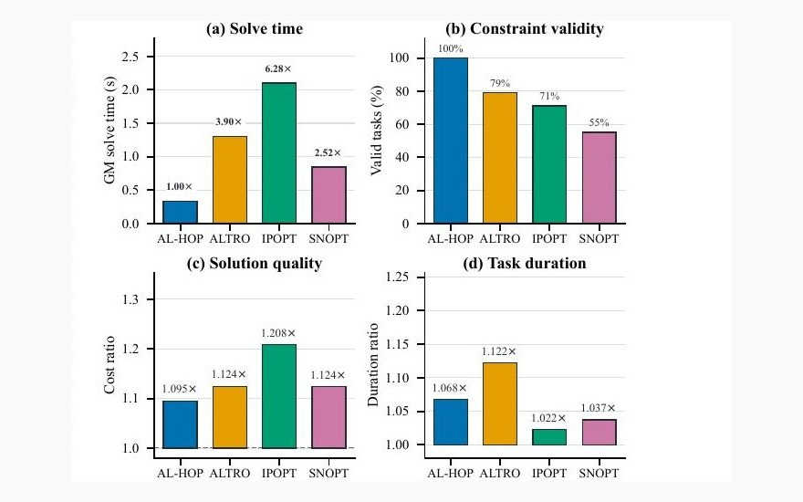
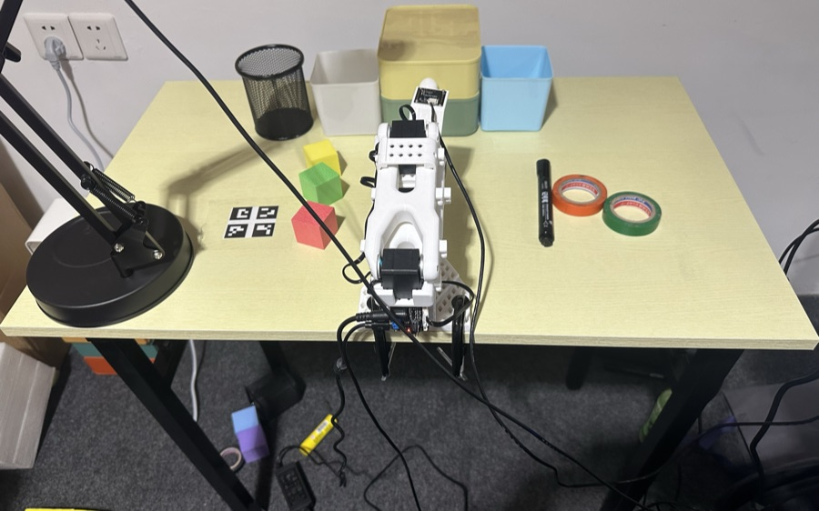

Completed my B.E. thesis at SJTU 完成上海交大本科毕业设计
August 20262026 年 8 月A voice-interactive closed-loop VLA system. I led a team of five. 语音交互式闭环 VLA 系统，任五人小组组长。
Incoming MSR · University of Pennsylvania · Fall 2026 2026 秋入学 · 宾夕法尼亚大学 机器人硕士
I am an incoming Master of Science in Robotics student at the University of Pennsylvania. I work on trajectory optimization, and mostly on a question standard planners skip: how long should a motion take? Conventional solvers fix the duration up front and re-solve for every guess. My work makes that choice part of the solve itself.
I also deploy vision-language-action models on real hardware, which is a useful corrective. The distance between a clean theoretical result and an arm that actually picks up the right object is where most of the interesting problems turn out to live.
我即将进入宾夕法尼亚大学攻读机器人学硕士（MSR）。我的研究方向是轨迹优化，关注的是大多数规划器会跳过的一个问题：一段运动究竟应该持续多久？传统求解器把时长当作提前给定的参数，每换一个猜测就要重解一次。我的工作把这个选择本身变成求解的一部分。
我也在真实硬件上部署视觉-语言-动作模型。这件事很能治人：从一个干净的理论结果，到一条真的能把正确物体抓起来的机械臂，中间的距离才是大部分有意思的问题所在。
Gave the talk as an undergraduate first author. 以本科生第一作者身份完成大会报告。
A voice-interactive closed-loop VLA system. I led a team of five. 语音交互式闭环 VLA 系统，任五人小组组长。
Master of Science in Robotics, starting Fall 2026. 机器人学硕士，2026 年秋季入学。

RSS 2026 · Robotics: Science and Systems
Undergraduate first author · presented the talk 本科生第一作者 · 本人作大会报告
A closed-form result that scores every candidate time horizon in one backward sweep, taking horizon search from O(N²) to O(N) — up to 40× faster than brute force, with the same selected horizon and cost. 提出并证明了一个闭式结果：单次反向扫描即可评估所有候选时间视界，把视界搜索从 O(N²) 降到 O(N)——比暴力搜索快至多 40 倍，且选出的视界与代价完全一致。

Under review · 2026审稿中 · 2026
Extends HOP to hard state and control constraints — obstacles, actuator limits — while keeping the one-sweep horizon prediction. Produced valid solutions on 100/100 benchmark problems across 10 dynamical systems. 将 HOP 推广到硬状态与控制约束（障碍物、执行器极限），同时保留单次扫描的视界预测。在 10 类动力学系统的 100 个基准问题上全部给出有效解。

B.E. Thesis · Shanghai Jiao Tong University · 2026 本科毕业设计 · 上海交通大学 · 2026
Project lead · team of 5 项目负责人 · 五人团队
Spoken commands drive a π0.5 policy on an SO-101 arm, with a vision-language model verifying that the objects you named are actually in view before anything moves. 70% end-to-end success with zero safety incidents. 语音指令驱动 SO-101 机械臂上的 π0.5 策略，由视觉语言模型先核验所指物体确实在视野中，证据不足则拒绝启动。端到端成功率 70%，全程零安全事故。